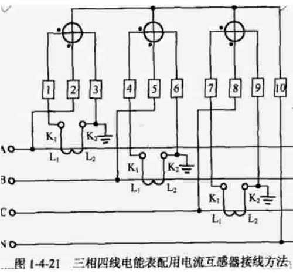
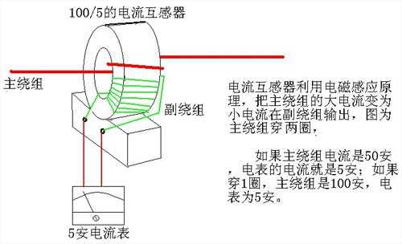
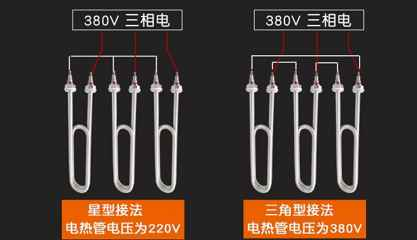
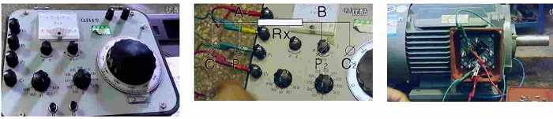
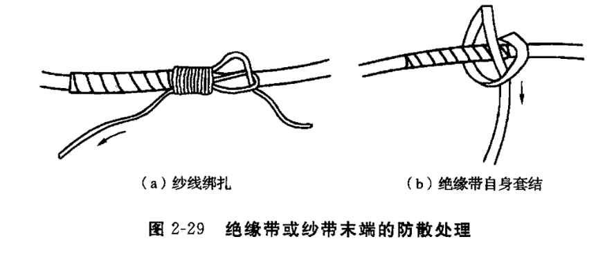
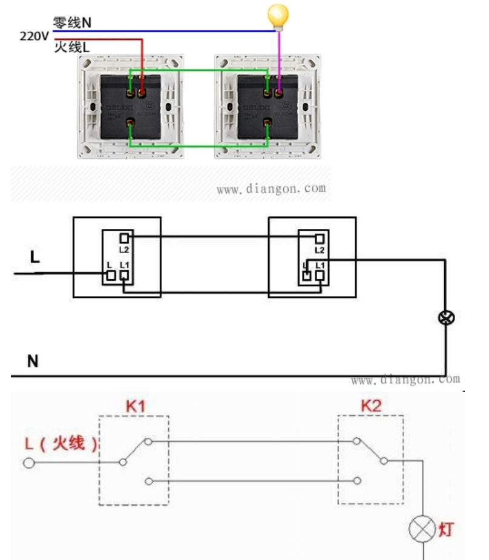
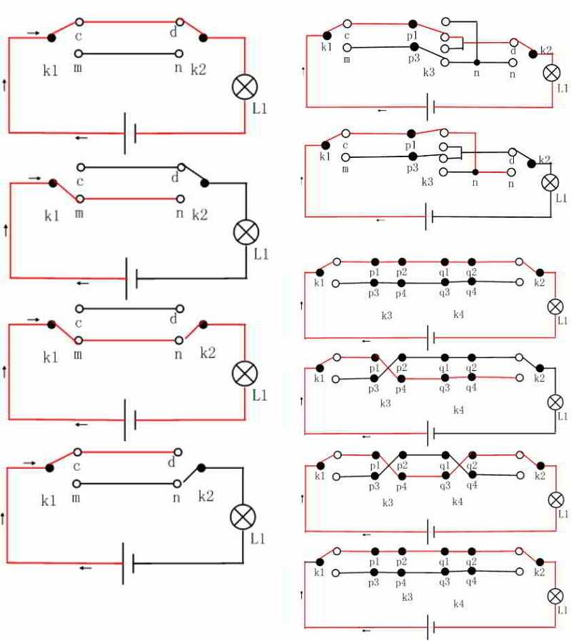

三相电能表
按接线方式一般也可分为直接式和互感式两种，按相线可分为三相三线和三相四线两种接线方式。

1、4、7端分别为A、B、C相电流CT的次级线圈正向输入，
3、6、9端分别为A、B、C相电流CT次级线圈负向输入，
2、5、8端分别为A、B、C相电压输入端，
10端为N线接线端。
三相四线直接式、三相三线直接式接线方式和三相四线互感式、三相三线互感式接线方式相近，只是没有如上述所说的2、5、8号的电压接入端，1、4、7端为A、B、C相线的接入端，3、6、9为A、B、C相线的接出端，依次类推。
三相三线互感式接线方式为10号端为空，不接N线，其他同三相四线互感式普通接线方式一样接线即可。
特殊情况下1、3、4为A、B、C电流CT次级线圈正输入，6、7、9为C、B、A电流CT次级线圈负输入，即为三相互感式跨接式接线方式。
注意事项
不允许将电能表安装在负载小于10％额定负载的电路中；
不允许电能表经常在超过额定负载值120％的电路中使用；
三相四线电能表不能和三相三线电能表混用；
在使用电流互感器时注意其CT比值
保证在一个相位上的电流、电压为同相序的，即不可在A相上接A相电流、B相电压等现象。这种现象可能会导致测量不准确，最大可能会有偏负50%左右的误差。
相线与N线不可接反，否则会导致其余二相上的电压上升√3倍，长时间会导致电能表损坏。ct接反后果
电流互感器仅仅连接电流表，电流互感器的极性接反是没有影响的，因为电流表测量的是交流，没有极性要求。
电流互感器连接电能表做计量，当（单相电源）电流互感器的极性接反，会造成计量电表反向转动，电度计量不是累加，而是相减。
三相电源使用的电流互感器，一个、或两个极性接反，会造成电度表的计量混乱，计量不正确（偏差极大）。
三相电源使用的电流互感器，三个电流互感器极性全部接反，会造成计量电表反向转动，电度计量不是累加，而是相减。
假如有一个用电户用电电流达到400安培，该情况下不可能找到可以计量这么大电流的电能表，只能通过CT将电流变小，比如选400/5的CT，然后将CT二次回路接入电能表，这时电能表电流回路的5安表示了用电户负荷电流是400安。这样电能表读到的行码乘以CT变比（也称倍数）就是用电户实际的用电量。 从上所述，可以看出并不是CT变比越大计量就越准确，CT一次额定电流的选择原则是用电负荷电流为一次额定电流的30%～60%。这时CT的计量精度最高（专业的说法是CT工作在线性段），如果一次额定电流选得过大会使CT的准确度降低（工作在非线性段）。
决定CT计量准确的是CT的准确度（如0.02、0.05、0.1...），这也是CT的一个重要参数，CT的准确度数值越小说明CT的精度越高CT二次回路要短路且一点接地
电流互感器即CT一次绕组匝数少，使用时一次绕组串联在被测线路里，二次绕组匝数多，与测量仪表和继电器等电流线圈串联使用，测量仪表和继电器等电流线圈阻抗很小，所以正常运行时CT是接近短路状态的。CT二次电流的大小由一次电流决定，二次电流产生的磁势，是平衡一次电流的磁势。CT在正常运行时，其二次回路的阻抗很小，基本上接近短路状态。一次电流所产生的磁化力大部分被二次回路的电流所补偿，总磁通密度不大磁路不饱和，二次回路的电动势也不大。

当电流互感器二次回路开路时，回路阻抗无限增大，二次电流等于零，二次绕组磁化力等于零，总磁化力等于一次绕组磁化力。此时一次电流完全变成了激磁电流，由于二次绕组比一次绕组多的多，在二次绕组中产生很高的电动势，其峰值可以达到几千伏，威胁人身安全或造成仪表、继电保护装置、互感器二次绝缘损坏。另一方面一次绕组磁化力使铁心磁通密度过度增大，可能造成铁心严重热而损坏。
电流估算
三相负载接成三角形连接时，某相负载开路或短路
短路时，会造成一相电压源短路，没有保护会使电源烧毁。 断路时，使这相电压源与其他两相电压源之和并联，又三相电压源之和为零，满足基尔霍夫电压定律，可以并联。电压源非理想，故并联使阻抗变小，电流相对增大，故负载电压略有升高，不影响工作。 每相电流为：10000/380/1.73=15.21 A 如果六根功率为5000瓦的电热管接成三 角形接法，则每相两根电热管，每相10K W功率，因三角形接法中，线电压等于相 电压，则线电压等于380V,每根电热管 中的线电流：10000/380/=26.3A。 又因为三角形接法中，线电流是相电流的 根号3倍（1.73倍），那么相电流为：26.6/ 1.73=15.21 A 
一、380V功率与电流计算
比如电动机： 1、公式： 电流=功率/电压*1.732*功率因数 2、计算： 1000/380*1.732*0.8=1.9-2A 功率因素选0.8。 即每1KW电动机其工作电流按2A计算。 3、注意： 三相电机的直接启动电流为额定电流的4-7倍。 因此计算电流时配线和选用开关时要留有余量。二、线电压与相电压关系
相电压：火线(相线L)与零线N之间的电压，一般为市电220V。 线电压：任意两根火线(相线L)之间的电压，一般为380V。 线电压：380V，相电压：220V。 1、线电压与相电压关系公式： 线电压=√3相电压 2、计算： 220V*√3≈380V 三相电是三根相线，相线与相线之间是380V。 其中的任意一个根相线和零线之间就是220V。 需要220V电压方法就是在380伏上取一根相线和零线组成连接就可以了。三、220V阻性电器功率与电流计算
阻性类电器： 白炽灯、电热器、电热杯、电饭锅、电熨斗等。 阻性类电器工作时其电流波形为正弦波，功率因数很高，接近1.0。 即Cosφ=1，只有电路中是纯阻性负载，或电路中感抗与容抗相等时，才会出现这种情况。 1、公式： 电流=功率/电压*功率因数 2、1000W计算电流： I=1000/220=4.5A 即阻性类电器1KW功率其工作电流为4.5A。 功率=电压*电流*功率因数0.6四、220V感性电器功率与电流计算
感性类电器： 电动机、手电钻、电风扇、吊扇、洗衣机等 工作时其电流波形会畸变，不再是正弦波了，功率因数一般0.6-0.8左右。 1、公式： 电流=功率/电压*功率因数 2、1000W计算电流： 1000/220*0.6=7.5A三相380V电机
功率＞3kW电机的估算电流=功率(kW)×2A/kW
功率≤3kW电机的估算电流=功率(kW)×2.5A/kW三相380V电热设备
估算电流=功率(kW)×1.5A/kW
单相220V用电设备
p/u，估算电流=功率(kW)×4.5A/kW
两根相线380V用电设备
估算电流=功率(kW)×2.5A/kW
跟220V的计算方法一样，电流=功率/电压，不过这里的电压不是220，而是380。例三相380v电热管三根电阻为60Ω
△接时每根电阻的的电压都为线电压380V，则每相的功率为U2/R，三相总功率为：P=3×U2/R=3×3802/60=7220（W）=7.22kW。
或者：每相的电流为I=380/R=380/60=6.3333（A），则每相功率：I2R，总功率：P=3×I2R=3×6.33332×60=7220（W）。
或者：相电流为6.3333A，则线电流=6.3333×√3=10.9696（A），纯电阻负载功率因数cosφ=1.P=√3×U×I×cosφ=√3×380×10.9696×1=7220（W）。
三相电阻电功率
星形联接时，每根电热管实际负载电压为220V，总功率：
P＝(U×U/R)×3
三角形接时，每根电热管实际负载电压为380V，总功率：
P＝(U×U/R)×3
已分解为3个单相计算后乘3，这里就不需要乘根号3了零序电流
不对称运行和单相运行是零序电流产生的主要原因。在三相四线制电路中，三相电流的向量和等于零，即Ia+Ib+Ic=0。如果在三相三线中接入一个电流互感器，这时感应电流为零。
当电路中发生触电或漏电故障时，回路中有漏电电流流过，这时穿过互感器的三相电流相量和不等零，其相量和为：Ia+Ib+Ic=I(漏电电流，即零序电流）[1]。这样互感器二次线圈中就有一个感应电流，此电流加于检测部分的电子放大电路，与保护区装置预定动作电流值相比较，若大于动作电流，则使灵敏继电器动作，作用于执行元件跳闸。这里所接的互感器称为零序电流互感器，三相电流的相量和不等于零，所产生的电流即为零序电流。
漏电保护器检测火线和零线电流矢量和是否为零。如 果为零没有漏电，不为零有漏电跳闸。如果把零线和地 线接在一起，对有零线分流有作用，如果这个分流大于 漏电保护器动作电流30毫安就会跳闸。 零线和地线短接，如果电源开关没有漏电保护，是不会 跳闸的，如果电源开关有漏电保护，则肯定跳闸。 漏电保护的原理是流经火线的电流等于流经零线的电 流，一旦有差值，则触发漏电保护跳闸。零线与地线短 接后，地线必然分流一部分本应流经零线的电流。QJ23单臂电桥（惠斯通电桥），QJ44双臂电桥（西林电桥）

u1，u2各夹一组（电流夹在电压后面）
灵敏度调到最小
刻度盘调到估计范围
接通电源k1，测试电源b
按下检流g，负值调小，正值调大，直到指0
松开检流，灵敏调到最大，准确调零
按下检测，调刻度盘直到指零
松开，关闭测试电源
读值（eg：(0.5+0.044)x倍率）
转测下一绕组摇表使用
兆欧表屏蔽端屏蔽线的作用
在用兆欧表测量绝缘电阻时，所测绝缘电阻值应该等于或接近于绝缘电阻的实际电阻值。
由于被测物表面总是存在着一定的泄漏电流，并且这一电流的大小直接影响测量结果。
为判别是内部绝缘体不好，还是表面泄漏电流的影响，就需要把表面和内部绝缘电阻分开。
其方法是用一只金属遮护环包在绝缘体表面，并经导线引到兆欧表的屏蔽端子，使其表面泄漏电流不流过测量线圈，从而消除了泄漏电流的影响，使所测得的绝缘电阻值真正是设备本身的电阻。
测量前将被测设备电源切断，并对地短路放电，不允许设备带电进行测量
对可能感应出高压电的设备，必须消除这种可能性后，才能进行测量。
被测物表面要清洁，减少接触电阻，确保测量结果的正确性。
测量前要检查兆欧表是否处于正常工作状态，主要检查其“0”和“∞”两点。即摇动手柄，使电机达到额定转速，兆欧表在短路时应指在“0”位置，开路时应指在“∞”位置。
兆欧表使用时应放在平稳、牢固的地方，且远离大的外电流导体和外磁场。
碰线慢摇指0，断开摇指无穷
测量时应保证电路中没有电源、没有负载，如果被测物体含有电容，应先对电容进行放电；摇动手柄过程中，不得触碰检测棒导体；测量结束后，应松开手柄，让手柄自行停止，在手柄停止转动之前，先将黑色检测棒拆下，并用黑色检测棒去接触红色检测棒，之后方可将红色检测棒也拆下。常用工具耗材点检
验电笔/钳表万用表/手电/记号笔/卷尺/大小号十字一字改锥/美工刀/剥线钳/压线钳/断电钳/老虎钳/尖嘴钳/自粘胶带/绝缘胶带/6-12活扳/中号活扳/六角扳/6-12套扳/透明零件盒/手指套/洗手粉
手枪钻/批头套头钻头丝锥/开孔器/并线器/备用电池
电锤/钻头
拖线盘/指示牌/木锤/铆枪铆钉/摇表/测温枪/熔胶枪胶棒/锡枪锡丝/喷灯/角磨机/护目镜/切割片/人字梯/安全带/高压手套/号码管/号码管打印机/标贴纸/射钉枪
线管弯管弹簧/管接头/线槽/波纹管/骑马卡/塑料膨胀/干壁钉/鸢尾丝/燕尾卡/扎带/小零件盒/扎带固定座/冷压端子/快接端子/分线器/端子盒/热缩管/阻燃布套/导电膏/WD40/din铝轨/m3-4-6螺栓螺母/电机连接片绝缘胶带防散处理
多控灯

